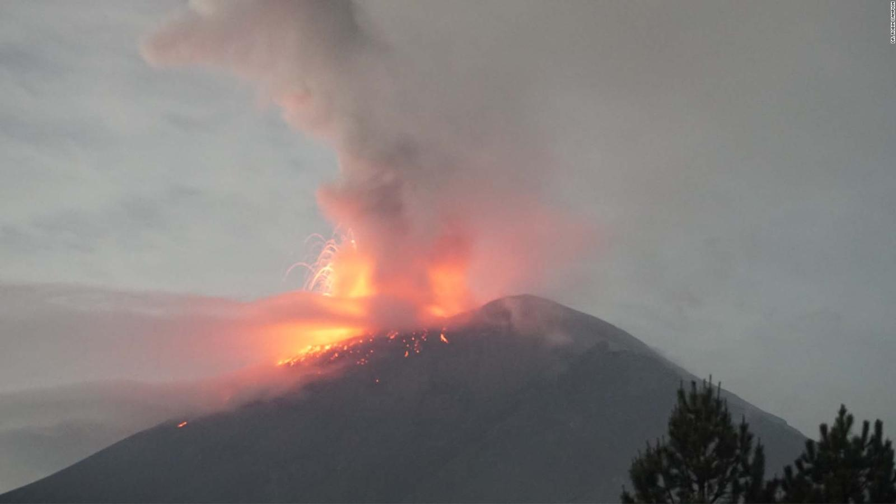

Petro se reúne con el presidente de la Autoridad Nacional Palestina, Mahmud Abás, en Nueva York.
El presidente Gustavo Petro sostendrá un encuentro con el líder palestino en el marco de la Asamblea General de las Naciones Unidas. Este encuentro busca fortalecer las relaciones bilaterales y abordar temas de interés común.

Consejo de Estado evaluará norma que permite a menores de edad acceder al aborto sin autorización de sus padres.
Una polémica norma que busca ampliar el acceso al aborto para menores de edad está siendo analizada por el Consejo de Estado. Esta decisión generará un intenso debate en el país.

Protesta por el abuso sexual de una niña de 10 años terminó en disturbios en el sur de Bogotá
Una manifestación pacífica en rechazo a un caso de abuso sexual escaló a enfrentamientos entre manifestantes y la fuerza pública en el sur de la capital.

Atentado al oleoducto Caño Limón-Coveñas causa graves daños ambientales; señalan al ELN como responsable
Un nuevo atentado contra la infraestructura petrolera ha generado una grave crisis ambiental en el país. Las autoridades señalan al grupo guerrillero ELN como el principal responsable de este hecho.
Muere Rodolfo Hernández, excandidato presidencial de Colombia
El reconocido empresario y político colombiano falleció recientemente, dejando una huella en la vida política del país.

Volcán Popocatépetl: Alerta por aumento de actividad
El volcán Popocatépetl, ubicado en el centro de México, ha registrado un incremento en su actividad en las últimas semanas. Las autoridades han elevado el nivel de alerta y se han reportado constantes exhalaciones de ceniza, algunas acompañadas de fragmentos incandescentes.Resumen del artículo 6. Aquí se habla sobre tecnología y gadgets.